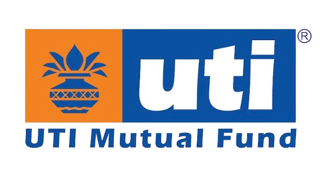
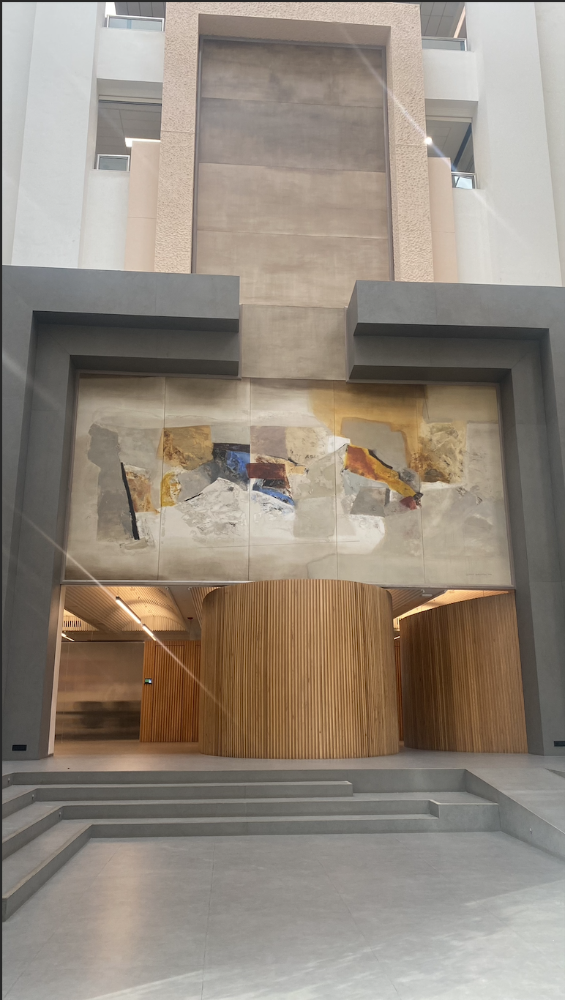
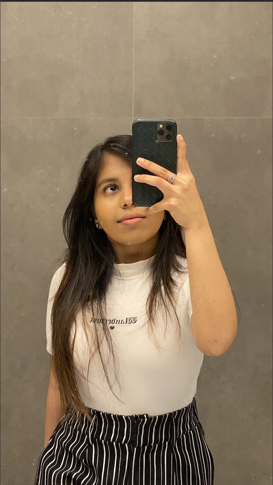
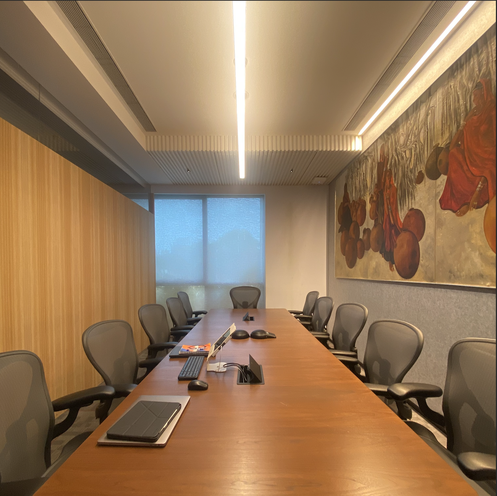
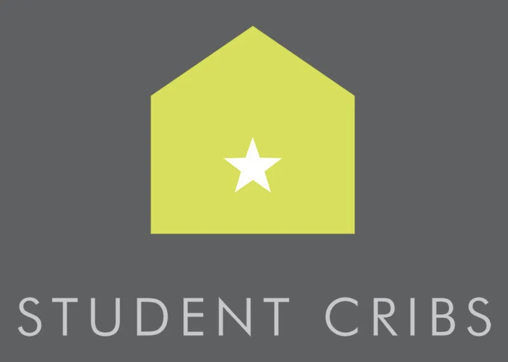

Work Experience
Freelance Software Developer
Outlier
December 2024 – Present | Leeds, United Kingdom
At Outlier, I focus on developing innovative software solutions and optimizing systems for enhanced performance. My role involves collaborating with cross-functional teams to design, implement, and deploy scalable applications tailored to client needs.
Key Responsibilities:
- Software Development: Developed and maintained software applications using modern programming languages and frameworks.
- User-Centered Design: Worked closely with teams to identify user requirements and implement solutions that improved efficiency.
- Testing & Quality Assurance: Conducted rigorous testing to ensure software reliability and quality.
- Code Reviews: Participated in peer code reviews to uphold high development standards.

Equity Research Analyst
UTI Mutual Fund
July 2023 – September 2023 | Mumbai, India
During my internship at UTI Mutual Fund, I had the unique opportunity to work as an Equity Research Analyst focusing on the hotel sector. My responsibilities revolved around conducting in-depth financial analysis, building predictive models, and developing Python tools to streamline data collection. I contributed to the broader goal of optimizing investment strategies by providing actionable insights based on real-time and predictive data.
Key Responsibilities:
- Annual Report Analysis: One of my primary responsibilities was to analyze annual reports for hotel companies. I focused on extracting key financial data, including occupancy rates, Average Room Rates (ARR), and revenue streams. I compared these figures with industry benchmarks to assess the performance of different companies, helping the equity research team identify potential investment opportunities.
- Predictive Modeling for Revenue Forecasting: Leveraging my skills in both finance and programming, I built predictive models to forecast future hotel performance. By analyzing cyclical industry trends, seasonal demand, and economic factors like inflation, I was able to predict occupancy rates and ARR more accurately. These predictions were instrumental in adjusting investment strategies.
- Cash Flow and Industry Analysis: I conducted comprehensive research into the hotel industry’s financial health, including cash flow projections and market position. My analysis provided insights into the capital allocation and investment strategies for key players in the sector, enabling the team to evaluate companies’ liquidity, solvency, and overall financial stability.
- Developing Custom Python Tools: Recognizing the need for more efficient data collection, I developed Python-based tools that automated the scraping of hotel and flight pricing data from major platforms such as Booking.com and Google Flights. These tools allowed the equity research team to gather real-time data on hotel room rates and flight prices, which was critical for analyzing the impact of travel demand on the hotel industry’s profitability.
Expanded Achievements:
- Hotel Industry Pricing Data Scraper: I designed and implemented a Python-based web scraper that automated the process of extracting hotel pricing data. The tool gathered data on room rates, room types, and breakfast availability from multiple platforms such as Booking.com. This data was then processed and analyzed to identify pricing trends, which significantly improved the accuracy of our revenue predictions and hotel sector assessments.
- Flight Price Data Scraper: In parallel, I developed another tool to collect flight price data, factoring in key variables such as departure and arrival dates, locations, and flight class. By analyzing flight price fluctuations, the equity research team was able to assess how travel demand correlated with hotel sector performance, giving us a holistic view of travel-related investments.
- Deep Industry Insights: I conducted a thorough analysis of how macroeconomic factors such as inflation, interest rates, and economic downturns affect the cyclical hotel industry. By linking these insights to my predictive models, I contributed to more informed decision-making, allowing the team to refine their investment approach and hedge against risks that arise from economic volatility.
- Predictive Modeling for Occupancy Rates and ARR: I developed a predictive model for occupancy rates and ARR based on historical data and industry trends. This model factored in variables like seasonality, local events, and macroeconomic conditions to make accurate predictions. The equity research team utilized this model to forecast hotel revenue and guide investment decisions for the coming quarters.
- Collaboration with Senior Analysts: Throughout my internship, I had the opportunity to collaborate closely with senior analysts. I presented my findings on pricing trends, cash flow projections, and occupancy rate forecasts to the team. These presentations helped guide the team’s investment decisions, and my predictive models were integrated into the broader investment strategy.
- Operational Efficiency Improvement: The Python tools I developed reduced manual data collection efforts by over 50%, streamlining the equity research team’s workflows. These tools provided more frequent and up-to-date data, allowing for quicker and more accurate investment assessments. As a result, the equity research team was able to make more timely decisions based on the most current information available.
- Presentation to Senior Management: Toward the end of my internship, I was invited to present my work to senior management at UTI. This presentation covered the predictive models I built, the Python tools I developed, and how they were being used to optimize the team's investment strategy. The feedback from senior leadership was overwhelmingly positive, and my tools were adopted for ongoing use within the department.
- Personal Growth: This internship allowed me to grow both professionally and personally. I honed my skills in financial analysis, programming, and project management while gaining a deeper understanding of how the financial markets operate. My ability to blend finance and technology provided a unique perspective and enabled me to add significant value to the team.




Brand Manager
Student Cribs
October 2022 – September 2023 | Leeds, UK
As the Brand Manager at Student Cribs, I led marketing initiatives aimed at increasing occupancy rates for student housing properties. My role focused on understanding market trends, student needs, and how best to position the brand within the highly competitive student accommodation market.
Key Responsibilities:
- Marketing Campaigns: Designed and executed targeted marketing campaigns across digital platforms.
- Brand Awareness: Collaborated with universities and student societies to promote properties.
- Property Marketing: Led the creative direction for promotional content, including property photoshoots and video tours for social media.
- Communication Improvement: Improved communication between property managers and tenants, introducing feedback loops and regular updates.
Notable Projects & Achievements:
- Occupancy Boost: Achieved a record high occupancy rate for key properties during the academic year by targeting early sign-up campaigns.
- Brand Partnership: Established partnerships with student organizations, leading to collaborative events.
- Digital Engagement Growth: Increased social media engagement through interactive content.
Events Promoter and Night Staff
University of Leeds
November 2023 – August 2024 | Leeds, UK
In my role as Events Promoter and Night Staff at the University of Leeds, I was responsible for increasing student engagement through organizing and promoting events for the Indian Society, as well as providing night-time support for campus events.
Key Responsibilities:
- Event Promotion: Organized and promoted Indian Society events, ensuring high student participation by utilizing social media platforms and on-campus outreach.
- Event Coordination: Managed logistics for night-time events, ensuring smooth operations and a safe environment for students.
- Marketing Initiatives: Developed promotional materials and implemented campaigns across social media to raise awareness and boost attendance for events.
Notable Projects & Achievements:
- Cultural Event Success: Organized and promoted Diwali and Holi events, each attracting over 500 students and fostering a sense of community.
- Event Safety Management: Introduced new safety protocols for large night-time events.
Artist
Self-employed
April 2018 – January 2019 | Delhi, India
As a self-employed artist, I produced commissioned artworks and sold custom pieces through online platforms, developing a strong brand identity and expanding my client base.
Key Responsibilities:
- Commissioned Work: Created personalized artwork for clients, adhering to specific themes, styles, and mediums based on individual preferences.
- Social Media Marketing: Managed an Instagram account to showcase my work, leading to increased visibility and client inquiries.
- Sales & Client Relations: Managed customer orders, pricing, and delivery, maintaining high levels of client satisfaction through strong communication and attention to detail.
Notable Projects & Achievements:
- Portfolio Expansion: Completed over 50 commissioned pieces, expanding my client base across India and internationally through social media outreach.
- Exhibitions: Participated in local exhibitions, showcasing original artwork that attracted significant interest from collectors and art enthusiasts.